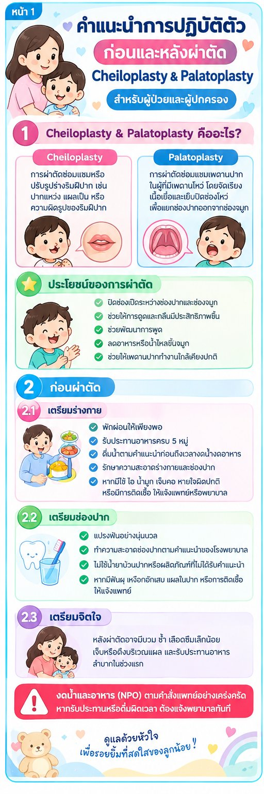

ก่อนผ่าตัด: เตรียมร่างกาย
- พักผ่อนให้เพียงพอ
- รับประทานอาหารครบ 5 หมู่
- แจ้งโรคประจำตัว ประวัติแพ้ยา และยาที่ใช้ประจำ โดยเฉพาะยาละลายลิ่มเลือด
- รักษาความสะอาดร่างกายและช่องปาก
- หากมีไข้ ไอ น้ำมูก เจ็บคอ หรือหายใจผิดปกติ ให้แจ้งแพทย์หรือพยาบาล
ก่อนผ่าตัด: เตรียมจิตใจ
- สอบถามแพทย์/พยาบาลเกี่ยวกับการผ่าตัดจนเข้าใจ
- หลังผ่าตัดอาจมีบวม ช้ำ เลือดซึมเล็กน้อย เจ็บหรือตึงบริเวณแผล ซึ่งเป็นอาการที่พบได้
- เตรียมผู้ดูแลมาช่วยในวันผ่าตัด
งดน้ำและอาหาร (NPO) ตามคำสั่งแพทย์อย่างเคร่งครัด
หากรับประทานหรือดื่มผิดเวลา ต้องแจ้งพยาบาลทันที
หลังผ่าตัด
- หายใจลึก ๆ และไออย่างถูกวิธี เพื่อป้องกันปอดแฟบ
- ลุกนั่งและเดินโดยเร็วตามที่แพทย์อนุญาต เพื่อลดภาวะแทรกซ้อน
- ดูแลแผลให้สะอาดและแห้ง ไม่แกะ ไม่เกา ไม่ดึง ไม่กดแผล
- ดูแลสายระบายและสายสวนปัสสาวะไม่ให้หัก พับ หรือดึงรั้ง
- รับประทานอาหารตามที่แพทย์สั่ง เริ่มจากน้ำหรืออาหารเหลว
- แจ้งพยาบาลเมื่อปวดแผล เพื่อรับยาบรรเทาปวด
เฉพาะเด็กผ่าตัดซ่อมแซมริมฝีปากและเพดานปาก (Cheiloplasty & Palatoplasty)
- Cheiloplasty การผ่าตัดซ่อมแซมหรือปรับรูปร่างริมฝีปาก เช่น ปากแหว่ง แผลเป็น หรือความผิดรูปของริมฝีปาก
- Palatoplasty การผ่าตัดซ่อมแซมเพดานปากในผู้ที่มีเพดานโหว่ เพื่อแยกช่องปากออกจากช่องจมูก
- ประโยชน์: ปิดช่องเปิดระหว่างช่องปากและช่องจมูก ช่วยให้การดูดและกลืนดีขึ้น ช่วยพัฒนาการพูด ลดอาหารหรือน้ำไหลขึ้นจมูก
- เตรียมช่องปาก: แปรงฟันอย่างนุ่มนวล ไม่ใช้น้ำยาบ้วนปากที่ไม่ได้รับคำแนะนำ หากมีฟันผุหรือแผลในปากให้แจ้งแพทย์
- หลังผ่าตัดเพดานปาก ห้ามดูดขวด ห้ามดูดนิ้ว ห้ามเป่า ประมาณ 4–6 สัปดาห์ หรือตามคำสั่งแพทย์ ป้อนนมด้วยช้อนหรือ Syringe ตามที่โรงพยาบาลแนะนำ
ให้ความรู้

มีข้อสงสัย ติดต่อ หอผู้ป่วยศัลยกรรมทางเดินปัสสาวะ ตกแต่ง แผลไฟไหม้ โรงพยาบาลพุทธชินราช พิษณุโลก โทร 055-270-300 ต่อ 1846, 18406, 18407